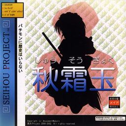

- Welcome to Touhou Wiki!
- Please register to edit. For assistance, check in with our Discord server or IRC channel.
Shuusou Gyoku
Shuusou Gyoku | |
|---|---|
|
 | |
| Developer | |
| Publisher |
Shunsatsu sare do? / |
| Released |
Trial: August, 2000 (Comiket 58) |
| Genre |
Vertical Danmaku Shooting Game |
| Gameplay |
Single-player story mode |
| Platforms | |
| Requirements |
|
| Official Site | |
- Note: This article is part of the Seihou Project by the Doujin circle "Shunsatsu sare do?".
Shuusou Gyoku (秋霜玉, lit. "Autumn Frost Orb", also romanised as Syu-so-gyoku) is a vertical-scrolling danmaku shoot 'em up, and is the first official game in the Seihou Project by "Shunsatsu sare do?" (at time part of Amusement Makers). It was released specifically for the Windows operating system around December time in 2000.
Gameplay[edit]
Shuusou Gyoku features one playable character (VIVIT) with 3 different modes. Homing missile is good for beginners or people who are too lazy to move. Wide shot is also useful for less movement, and can clear a whole screen of enemies quickly. Laser is great for destroying a boss fast.
The game uses an Evade system to let the players rack up massive scores by constantly grazing. All enemies drop point/power items; their value increases based on the point system and how high you are on the screen when you collect them.
The game overall has compatibility issues if it were to be played on Windows Vista/7/8. See the gameplay article under "Glitches" for details.
Name and Concept[edit]
The game is inspired by the Touhou Project. ZUN has contributed to some art within the game, where Reimu Hakurei and Marisa Kirisame appear in their brand new Windows outfits, two years before Embodiment of Scarlet Devil.
The name 秋霜玉 is a Japanese-translated name of a cactus: "copiapoa glandiflora". On the back cover of the game, the title was romanised as Syu-so-gyoku, but "Shuusou Gyoku" is more of a standard romaji.
Story[edit]
The game takes place on Earth in the future. VIVIT, a robot maid, has been sent out to run errands for her master, but she is constantly interrupted by battles. There are 6 stages, and one very difficult extra stage.
Music[edit]
The music of this game includes 20 original tracks composed by ZUN in MIDI format for the SC-88Pro. Recordings of these MIDI files made using this module can be found here. Each of the phases in the final boss fight, as well as both extra stage bosses, have an individual theme, very similar to that of a typical Touhou Project game.
The prototype version of the game, known as Project Gian, had some themes that were replaced in the final game. These include "Plastic Space" as Stage 1 theme, "Inventive City" as Stage 2 theme and "Fly above Hatoyama at Night" as extra stage theme. "Hourai Illusion ~ far East" was another song planned to be used as the extra stage theme, which eventually ended up to be "Silk Road Alice". Interestingly, in the beginning of that theme, the melody plays a variation of "Theme of Eastern Story".
The music from the Comiket 58 trial is slightly different from the final version.
During 2001, ZUN arranged the entire game's soundtrack (minus "Titled Maid") and published those arrangements on his MIDI page. These versions contain additional melodies, phrases and sections. While most of these arrangements end in a fade-out, "Herselves" features a slower variation of its last part to close out the song. "Plastic Space", "Inventive City" and "Hourai Illusion ~ far East" became part of ZUN's Strange Works.
Later, ZUN included further arrangements of the game's music on his music CDs. On Dolls in Pseudo Paradise, "Dichromatic Lotus Butterfly ~ Ancients" was arranged as "Dichromatic Lotus Butterfly ~ Red and White," featuring a more synthesizer-driven sound, and "Mechanical Circus ~ Reverie" was rearranged in a more subdued fashion and given the title "Circus Reverie". Ghostly Field Club had a version of "Magical Girl Crusade", an earlier version of which can be found on ZUN's MP3 page. For Changeability of Strange Dream, "Illusory Science ~ Doll's Phantom" was arranged as "Phantasm Machine ~ Phantom Factory". Also, ZUN arranged "Fly above Hatoyama at Night" in the style of FM synthesis, featured on the Perfect Memento in Strict Sense CD as "Fly above Hatoyama at Night - Power MIX." It contains additional melodic material. The CD included with The Grimoire of Marisa featured an arrangement of "Illusionary Sputnik Night".
Some themes from this game was also arranged in the Touhou Project games, where Marisa Kirisame's theme in Immaterial and Missing Power is an arrangement of "The Witches' Ball ~ Magus" and Reimu Hakurei's theme in Touhou Hisoutensoku and Urban Legend in Limbo is an arrangement of "Dichromatic Lotus Butterfly ~ Ancients" (the latter actually from Dolls in Pseudo Paradise's version), both arranged by U2 Akiyama. Marisa's theme in Fairy Wars ("Magus Night") was originally meant to be an arrangement of "The Witches' Ball ~ Magus", but because ZUN had forgotten the theme and only had some impressions left in his mind, "Magus Night" became a completely different song. This theme was then later rearranged as Marisa's theme in Hopeless Masquerade, also by U2.
Arranged versions of music from this game were also included in Samidare by Project Blank. Gates' theme in Samidare is an arrangement of "Firmament Army" called "Meets The Gates", while VIVIT's theme is an arrangement of "False Strawberry" called "Broken Strawberry Shortcake".
Staff[edit]
- Ponchi (ぽんち) — Program
- Doku Den P (毒電Ｐ) — Graphic, Sound Effect
- ZUN — Graphic, Music
- hiroyuki-chan (ひろゆきちゃん) — Graphic, Sound Effect
- Mac-Key — Graphic, Scenario
- few — Scenario